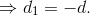
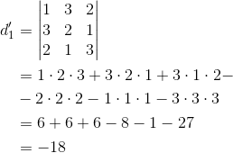

Proprietățile determinantului
Atunci când vei calcula valoarea determinantului unei matrice sau când vei întâlni probleme care se rezolvă cu ajutorul determinanților, este bine să ții cont de unele proprietăți ale acestora care îți vor simplifica calculele și astfel vei ajunge mai ușor la rezultatele dorite.
Printre proprietățile determinantului unei matrice amintim:
Propoziția M20:
Dacă un determinant are toate elementele unei linii sau ale unei coloane nule (egale cu zero), atunci valoarea determinantului este nulă (zero).
Exemple:

Propoziția M21:
Dacă un determinant conține două linii sau două coloane identice (cu elementele egale), atunci valoarea determinantului va fi zero.
Exemple:

Propoziția M22:
Dacă două linii sau două coloane ale unui determinant au elementele proporționale, atunci determinantul este nul.
Exemple:
Propoziția M23:
Dacă elementele unei linii sau ale unei coloane se obțin printr-o combinație liniară a elementelor celorlalte linii sau coloane, atunci valoarea determinantului este nulă.
Exemplu:
Se observă că elementele coloanei a treia s-au obținut prin scăderea elementelor coloanei a doua din elementele coloanei întâi. Adică .
Propoziția M24:
Dacă se înmulțesc toate elementele unei linii sau ale unei coloane cu un număr  , atunci valoare determinantului se multiplică (se înmulțește) cu acel număr .
, atunci valoare determinantului se multiplică (se înmulțește) cu acel număr .
Exemplu:
Înmulțim coloana a doua cu numărul  .
.
Propoziția M25:
Determinantul unei matrice pătratice este egal cu determinantul matricei transpuse.
.
Exemplu:
Propoziția M26:
Dacă într-un determinant se schimbă între ele două linii sau două coloane, atunci obținem opusul determinantului inițial.
Exemple:
Determinantul  s-a obținut prin schimbarea coloanelor
s-a obținut prin schimbarea coloanelor  și
și  a determinantului
a determinantului  .
.


Determinantul s-a obținut prin schimbarea (permutarea) liniilor și  a determinantului .
a determinantului .
Propoziția M27:
Dacă la elementele unei linii (coloane) ale unui determinant se adună elementele altei linii (coloane), înmulțite eventual cu același număr (scalar), atunci valoarea determinantului nu se va schimba.
Exemplu:
La elementele liniei a treia a determinantului  se adună elementele liniei întâi înmulțite cu scalarul .
se adună elementele liniei întâi înmulțite cu scalarul .
Propoziția M28:
Dacă , atunci .
Exemplu:
Fie matricele  și .
și .